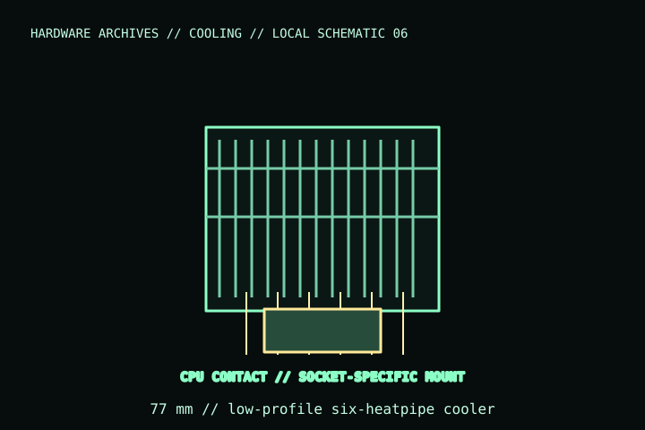

[ INDIVIDUAL COMPONENT // COOLING ]
Noctua NH-L12Sx77
77 mm-tall low-profile CPU cooler with six heatpipes and one NF-A12x15 PWM fan. The model is specifically taller than NH-L12S; check the exact x77 variant and RAM/fan arrangement.

IDENTIFICATION: Match the complete model name, suffix, article number, bundle, revision, and host manual to the physical label before installation. Similar product names and variants may use different wiring or dimensions.
Specifications
| Catalog subcategory | Air CPU coolers / stock and low-profile air coolers |
|---|---|
| Exact model | Noctua NH-L12Sx77 |
| Installed height | 77 mm overall height; 128 × 150 mm footprint (check the manual for orientation) |
| Heatsink / fan | Six heatpipes; 1 × NF-A12x15 PWM, 120 × 120 × 15 mm, 4-pin PWM |
| Mounting | SecuFirm2 mounting for manufacturer-listed Intel/AMD sockets; verify current socket kit and compatibility list. |
| Clearance | Low-profile 77 mm class; memory height and slot access vary with orientation and board layout. |
Compatibility, installation & service
- Measure the case cooler limit against 77 mm and verify socket, board, memory-module height, and orientation in the model manual.
- Use only the included/model-correct mounting kit; confirm the fan does not overlap tall DIMMs or motherboard heatsinks.
- Connect the 4-pin PWM fan within the motherboard header’s current limit.
Service notes
Clean the fan and fin stack with the system off and rotor restrained. Reapply thermal compound after heatsink removal; inspect clips and mounting hardware for deformation.
Manufacturer references
- Noctua — NH-L12Sx77Manufacturer page for the exact 77 mm model.
- Noctua — Compatibility centreManufacturer socket and board compatibility reference.
Verify fit, wiring, and ratings against the manufacturer document for the exact unit and host. This catalog record is an identification aid, not a compatibility guarantee.